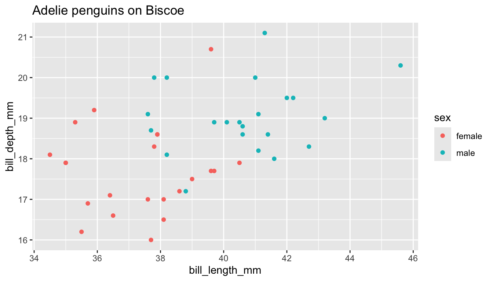
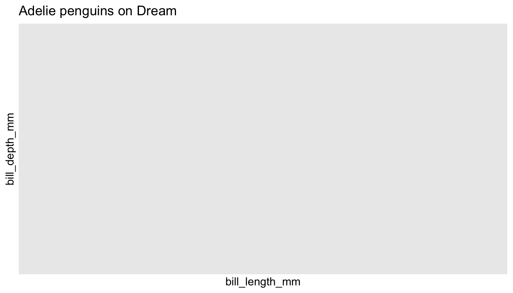
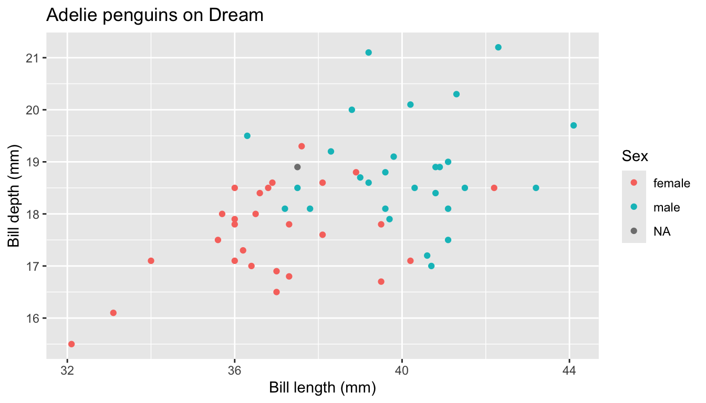

Research Software Engineering and Functional Programming
Objectives
By the end of this lecture you will be able to:
- explain what distinguishes research software from a research script
- apply the principles of separation of concerns, modularity, DRY and “fail fast” to structure an analysis
- write pure functions, and use
purrr’smap,reduceand predicate functions in place of loops
Setup
Packages and data
purrr is part of the tidyverse: it’s the package for functional programming and iteration.
Research software
Scripts don’t stay scripts
A script: written quickly, to answer one question, run once by its author.
Research software: code that others — or you, in six months — rely on. It’s re-run on new data, extended, shared, and its results get published.
“Can you re-run it on next year’s data?” → “…with one variable changed?” → “…and update the plots for the paper?”
Research software engineering (RSE): applying software engineering principles so that code is robust, reusable and maintainable.
Four principles
- Separation of concerns — each part has one job: load, clean, model, plot, report
- Modularity — build the parts as independent, reusable functions
- Don’t repeat yourself (DRY) — every piece of knowledge written in exactly one place
- Fail fast — check for problems early and stop with a clear error
Separation of concerns
Everything mixed together
Longer to write — each function must be defined somewhere — but it reads as a summary of the analysis, each step can be checked on its own, and a change to cleaning means editing one function.
Copy, paste, edit
Task
We want the same plot for Adelie penguins on two islands. What’s wrong here?
penguins |>
filter(species == "Adelie", island == "Biscoe") |>
ggplot(aes(x = bill_length_mm, y = bill_depth_mm, colour = sex)) +
geom_point() +
labs(title = "Adelie penguins on Biscoe")
penguins |>
filter(species == "Adelia", island == "Dream") |>
ggplot(aes(x = bill_length_mm, y = bill_depth_mm, colour = sex)) +
geom_point() +
labs(title = "Adelie penguins on Dream")

A typo, "Adelia", crept in while editing the copy. R gives no error: filtering for a species that doesn’t exist is valid, and returns no rows — so the second plot is silently empty.
DRY + fail fast
Task
Write a function plot_bills(data, species_name, island_name) that draws this plot, and stops with a clear error if the species or island isn’t in the data.
plot_bills <- function(data, species_name, island_name) {
if (!(species_name %in% data$species)) {
stop("Unknown species: ", species_name)
}
if (!(island_name %in% data$island)) {
stop("Unknown island: ", island_name)
}
data |>
filter(species == species_name, island == island_name) |>
ggplot(aes(x = bill_length_mm, y = bill_depth_mm, colour = sex)) +
geom_point() +
labs(title = paste(species_name, "penguins on", island_name),
x = "Bill length (mm)", y = "Bill depth (mm)", colour = "Sex")
}
plot_bills(penguins, "Adelie", "Biscoe")
plot_bills(penguins, "Adelie", "Dream")

Does it fail fast?
Error in plot_bills(penguins, "Adelia", "Dream"): Unknown species: Adelia- the typo now stops the analysis with a clear message
- improvements (like the axis labels) are made once and apply to every plot
Organising a project
my-project/
├── README.md # what the project is, and how to run it
├── data/ # raw data, never edited by hand
├── R/ # functions, e.g. cleaning.R and plots.R
├── analysis.qmd # the report, which uses the functions
└── results/ # generated outputs, can always be recreatedSpeed vs structure
Research code is often exploratory and thrown away — but the parts that survive live far longer than expected.
- exploring: rapid iteration is fine
- once it works: refactor into functions, without changing what it does
- before sharing: clean it up
Habits that cost nothing even while exploring: use functions (even small ones), no hard-coded absolute paths, write down your assumptions.
Functional programming
Paradigms
- Procedural: a sequence of steps
- Object-oriented: objects bundling data and behaviour
- Functional: pure functions and immutable data
R supports all three, but is a natural fit for functional programming:
- functions are values: assign them, pass them, return them
- anonymous functions:
function(x) x + 1, or\(x) x + 1 - higher-order functions take or return functions (week 2)
Pure functions
A function is pure if
- its result depends only on its arguments, and
- it has no side effects — it changes nothing outside itself.
Task
Which of these are pure?
add: pureincrement: impure —<<-changescounteroutside the function (breaks 2)add_z: impure — its result depends on the globalz(breaks 1). Fix: passzas an argument.
Immutability
You’ve been doing this since week 4:
[1] TRUE[1] FALSEdplyr verbs return a new, modified copy. penguins only changes if you assign the result back to it.
purrr
Apply a function to every element
Task
Square every element of x <- 1:10 using a for loop, then using sapply(), then using purrr::map_dbl().
The map states the intent in one line: no index to get wrong, no result to set up in advance, no variables leaking out.
Why not sapply?
Task
Predict what type of object each call returns.
[1] 1 4 9 [,1] [,2] [,3]
[1,] 1 2 3
[2,] 1 4 9[[1]]
[1] 1
[[2]]
[1] 1 2
[[3]]
[1] 1 2 3list()map is type stable
The name tells you the type of the result:
| Function | Returns |
|---|---|
map() |
a list — results can be anything |
map_lgl(), map_int(), map_dbl(), map_chr() |
a vector of that type |
An empty input gives an empty double; a result that doesn’t fit is an error, straight away — fail fast again.
Writing functions inline
Three equivalent ways:
[1] 1 4 9 16 25[1] 1 4 9 16 25[1] 1 4 9 16 25Lists of results
Task
Split penguins into one tibble per species, compute the number of penguins and mean body mass of each, then combine the results into a single table.
# A tibble: 3 x 3
species n mean_mass
<chr> <int> <dbl>
1 Adelie 152 3701.
2 Chinstrap 68 3733.
3 Gentoo 124 5076.reduce: combine two at a time
Task
reduce(x, f) combines the elements of x pairwise: f(f(f(x1, x2), x3), x4)… Use it to add up 1:10.
An accumulator with .init
When the accumulator isn’t the same type as the elements, give a starting value:
$sum
[1] 55
$prod
[1] 3628800Pointless for a vector in memory — sum() and prod() are faster. It pays off when each pass through the data is expensive, e.g. data spread over many files on disk. We’ll use exactly this idea for big data in week 10.
Predicates
A predicate is a function that returns TRUE or FALSE.
[1] 6 7 8 9 10[1] FALSE[1] TRUEPartial application
Fix some arguments of a function, to get a new function of the rest:
Defensive programming
Silent recycling
Task
From Lab 2: what does this return, and why is it a problem?
A number — but it’s meaningless. - silently recycles the shorter vector to the length of the longer one, so 1:2 is treated as c(1, 2, 1, 2).
Check your inputs
Error in distance(1:4, 1:2): x and y must have the same length.Validate inputs and fail fast with a clear message, rather than letting a wrong answer travel silently through the analysis.
Wrap-up
Today you can now:
- structure an analysis: separate concerns, write functions, don’t repeat yourself, fail fast
- recognise pure functions, and keep side effects at the edges
- iterate with
map_*(), combine withreduce(), filter withkeep()and friends
Read the notes
We didn’t cover in detail:
- handling errors:
try(),tryCatch(), andpurrr::possibly()for reading many files when some may fail - unit tests with
stopifnot()andtestthat - documenting functions with roxygen comments (
#') compose(), and dependency management withrenv